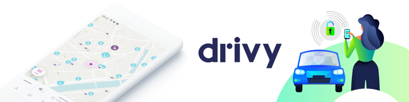
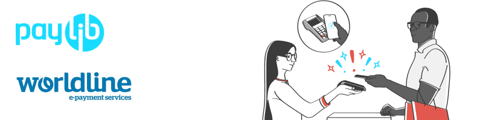
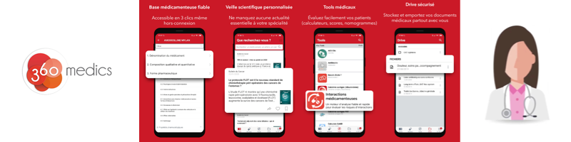
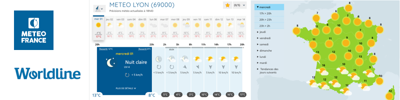

About

Software engineer since 8+ years, I currently work at Getaround in the Product & Engineering team where I contribute to building a car-sharing service to change the way we use cars. I love building good products and being a team player.
I worked in various business area such as weather forecast, cartography, bank, events management, medical or mobility. I enjoy sharing knowledge with my team and I had the opportunity to be a speaker at some local events and conferences in order to share more widely. I have focused more on mobile in recent years, but I am curious to work and learn on everything related to software and product developement.
If you want to learn more on my professional experiences you can have a look on my Linkedin or you can contact me by Twitter, Linkedin or email at boulard.renaud-at-gmail-dot-com. I’m open to chat on topics related to dev/product/tech or new work opportunities, I will get back to you within 24 hours.
Some products I worked on:
Drivy

Drivy was the largest car-sharing service in Europe, acquired by Getaround for $300 million in April 2019. I currently work at Getaround where I’m contributing to create great mobile apps to change the way we used cars.
Paylib at Worldline

A mobile contactless (NFC) payment SDK branded as Paylib and integrated in banks apps such as BNP Paribas, Hello bank!, La Banque Postale, Société Générale, use by several millions of customers .
360 medics

360 medics is an app that helps caregivers committed to excellence in care. Already 300 000 health professionals use it, 1 young doctor out of 2 in France daily!
PassEvent
A service to help organization of events, covering ticket scanning, online ticketing, tailor-made organization and management of the cash register. I worked on the mobile application. Use to manage events with more than 1000 attendees.
Météofrance

Weather forecast website : Météo France is the French national meteorological service ~2 million daily visits. I was involved in a complete rebuild of the platform with in a team of ~15 developers.
Thank You for reading!